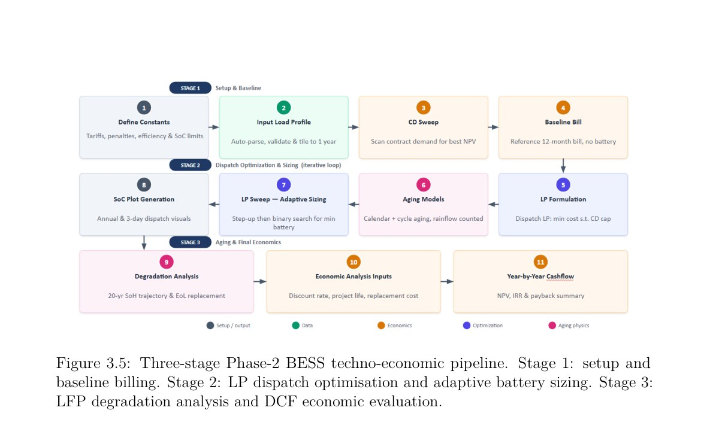
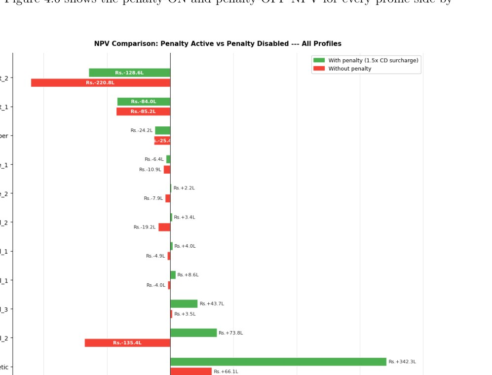
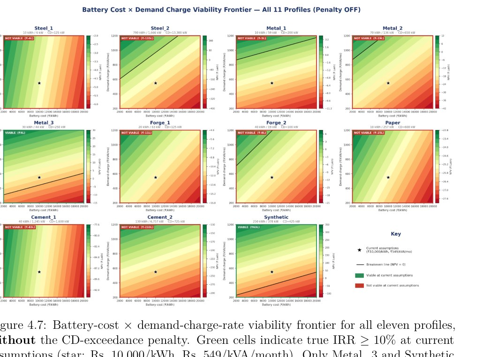

Overview
The Dual Degree thesis develops an integrated framework for industrial BESS peak shaving under the MSEDCL HT-I tariff. It connects four decisions that are often studied separately: battery sizing, optimal dispatch, degradation and lifetime project economics.
Integrated optimisation pipeline
The Phase-2 workflow automates baseline billing, contract-demand sweeps, LP dispatch, adaptive sizing, SoC reconstruction, C-rate evaluation, LFP degradation and discounted cash flow.

Analytical & optimisation-based sizing
A reservoir maximum-drawdown method was developed as a fast screening tool for minimum battery energy. For the Steel_2 profile, it returned about 5.61 MWh versus about 5.62 MWh from the LP—within roughly 0.2%.
Dispatch-aware LFP degradation
Calendar and cycle ageing are evaluated from the simulated SoC trajectory using an LFP/graphite ageing model and rainflow counting. A key result is that economically optimal dispatch can reduce battery cycling dramatically relative to an aggressive heuristic, making calendar ageing dominant for some peak-shaving assets.
Tariff-driven economics
The central result is that the contract-demand exceedance surcharge materially changes project viability. For Steel_2, enabling the modelled surcharge shifts NPV by about ₹209 lakh—from strongly negative to positive.


Deployment cases
The thesis distinguishes absolute-value and capital-efficient opportunities rather than claiming a single universal battery size. Load shape—block, flat-near-ceiling or impulsive—proved more informative than peak kW alone.
The research explicitly notes perfect load foresight, constant 25°C battery temperature, cell-specific ageing calibration and limited site history as important limitations and future-work areas.
Source material
The project narrative above is condensed from the submitted coursework/thesis and keeps design estimates, simulation results and demonstrated hardware distinct.